Configuring the Environment
Warning
Ask your instructor if these pre-requirements have already been done for your workshop. You can skip this section in that case.
This document contains the details for initially configuring your Cloud Pak for Data environment so it's ready to follow this lab. Instructions assume you already have access to a Cloud Pak for Data environment as the admin user. If not, please follow the instructions in the Request an environment section.
Create the required CP4D role
Info
A new role will be created with the permissions the workshop attendees need.
-
Login to CP4D as the admin user.
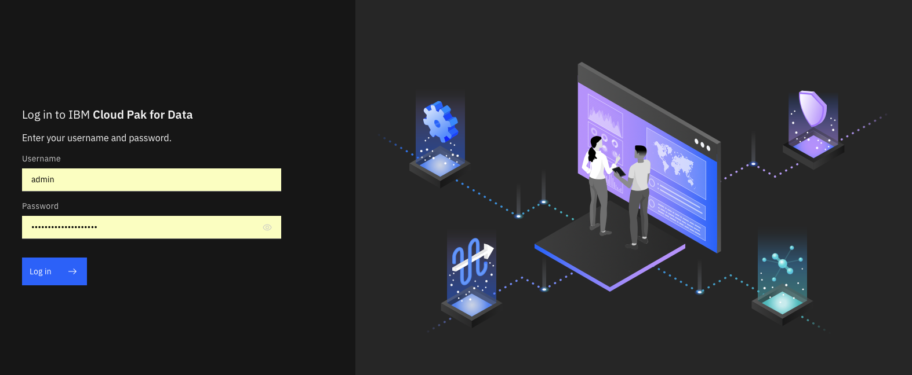
-
Navigate to Access control by clicking on the navigation menu (top left hamburger menu) and then clicking Administration Access control.
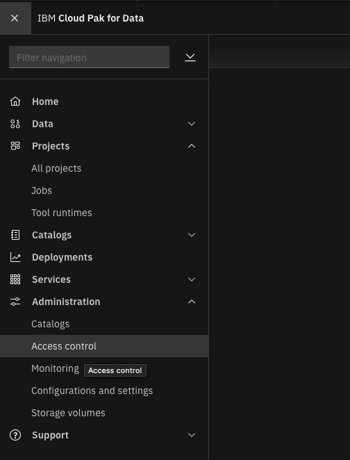
-
Go to the Roles tab and click New role
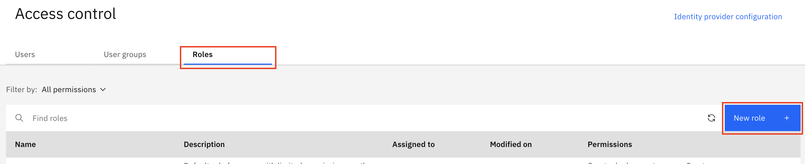
-
Set the role name MLOps Workshop and add the following permissions:
- Catalogs > Access Catalogs
- Deployments > Create deployment spaces
- Deployments > Monitor deployment activity
- Projects > Create projects
- Projects > Monitor project workloads
-
Click Next then Create to create the new role.
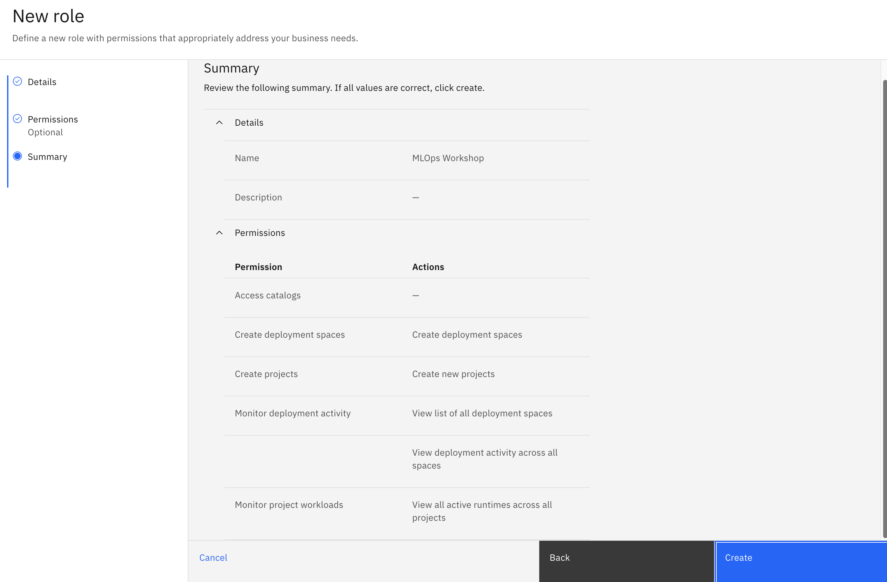
Give the Administrator Role all permissions
-
From the Access Control menu, go to tab Roles and open the Administrator Role.
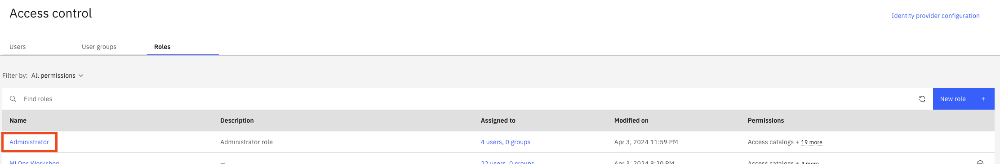
-
Click Add Permissions +.
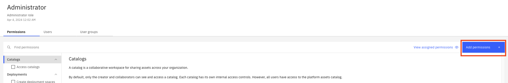
-
Select all available permissions, then click Add N permissions.
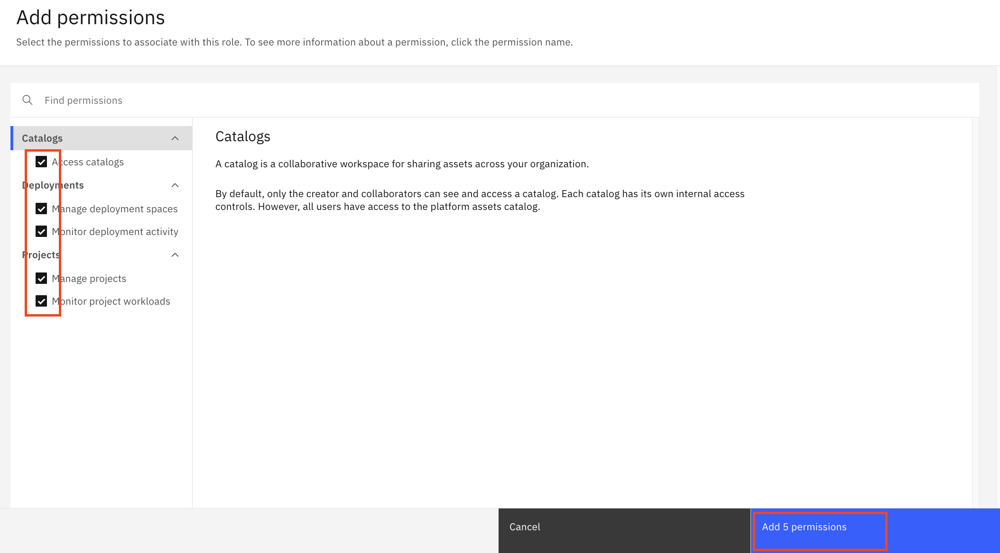
Create the required users in CP4D
Info
In this workshop, attendees will be sharing a single environment to optimize the available hardware resources.
Create one user per attendee numbering them in ascending order, like this:
| Full name | Username | Password | Role |
|---|---|---|---|
| user1 | user1 | user1 | MLOps Workshop |
| user2 | user2 | user2 | MLOps Workshop |
| user3 | user3 | user3 | MLOps Workshop |
| userX | userX | userX | MLOps Workshop |
The way you create users in CP4D will depend on the method you followed to deploy the environment in the section Request an Environment:
-
If you used the pre-installed environment or the CP4D deployer, login CP4D as the admin user, then go to Administration > Access Control. You can create the users there.
IMPORTANT
Create your users with a Full Name. If they don't have a full name, AI Factsheets will fail when a new use case is created.
-
If you installed CP4D manually, the IAM Service should be active. Therefore, add a new Openshift htpasswd-based Auth Provider with the workshop users. See this Red Hat's Documentation for information on how to do it. Login with each user in Openshift so they're active, then assign them the workshop role in CP4D Administration > Access Control
Data Upload
In this section, you will upload the data in customer_training_data.csv to the Db2 database you created in section Request an Environment. Download the file to your local computer: customer_training_data.csv.
-
Login CP4D with the admin user.
-
Navigate to Databases by clicking the Navigation menu and selecting Data > Databases.
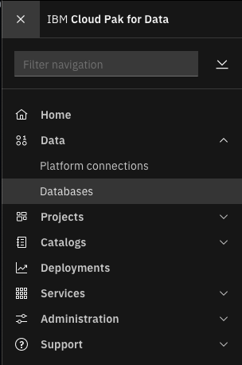
-
Find the database you created. Click the 3-dot menu and then Open database. If you get an error related to the Data Management Console, wait for some minutes then try again. If the page just doesn't load, try to open it in an incognito window.
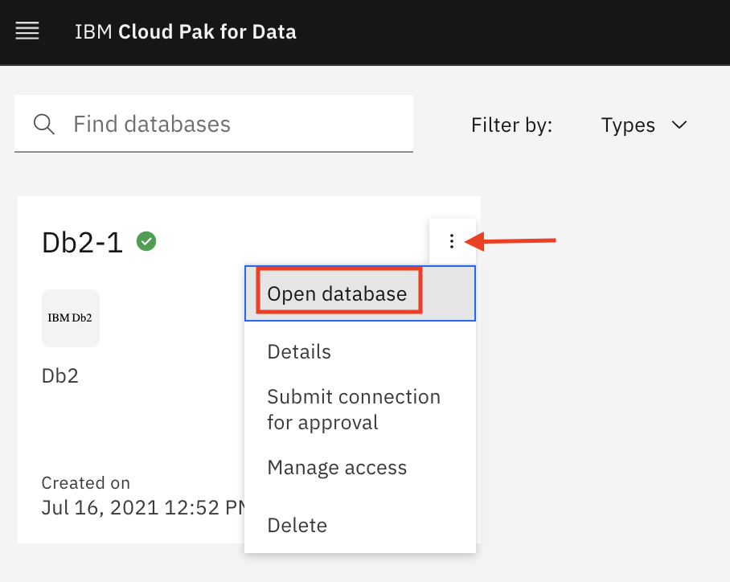
-
Click the Summary drop down, expand Load drop down and select Load Data.
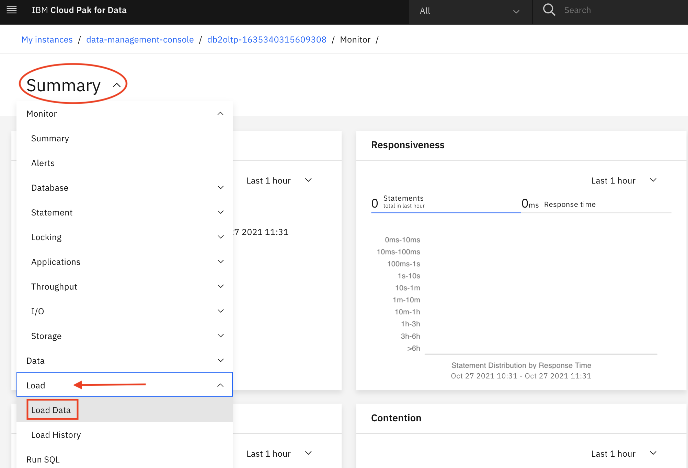
-
Click the browse files link and select the customer_training_data.csv file you downloaded before. Then click Next.
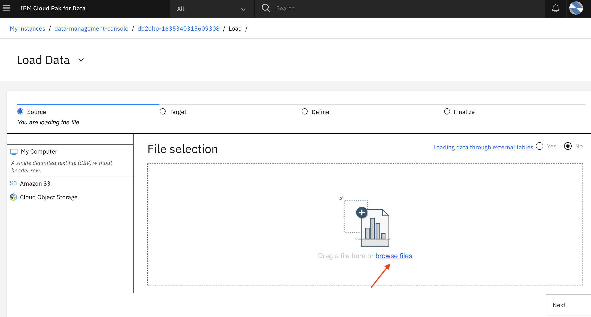
-
On the schema page, click New schema +, specify the schema name as CUSTOMER and click Create.
Tip
For future uploads of data sets to the CUSTOMER schema, you can select the CUSTOMER schema if it is already created.
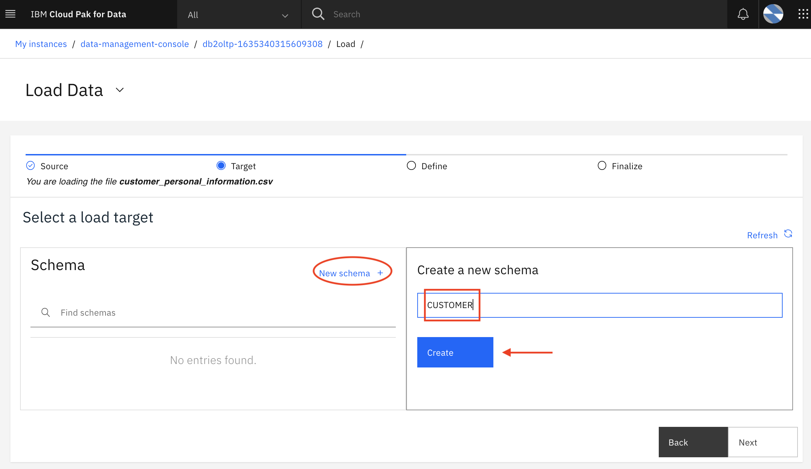
-
On the Table page, click New table + (annotated with red oval), provide a table name as CUSTOMER_TRAINING_DATA (annotated with red rectangle) and click Create (annotated with red arrow).
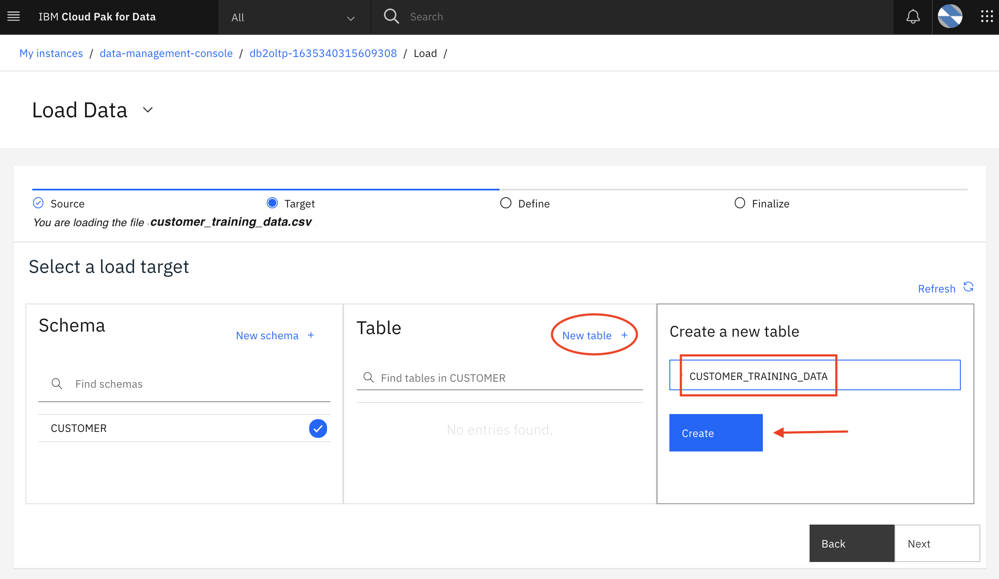
-
Select the CUSTOMER_TRAINING_DATA as the table to upload data to (annotated with red rectangle) and click Next twice (annotated with red arrow).
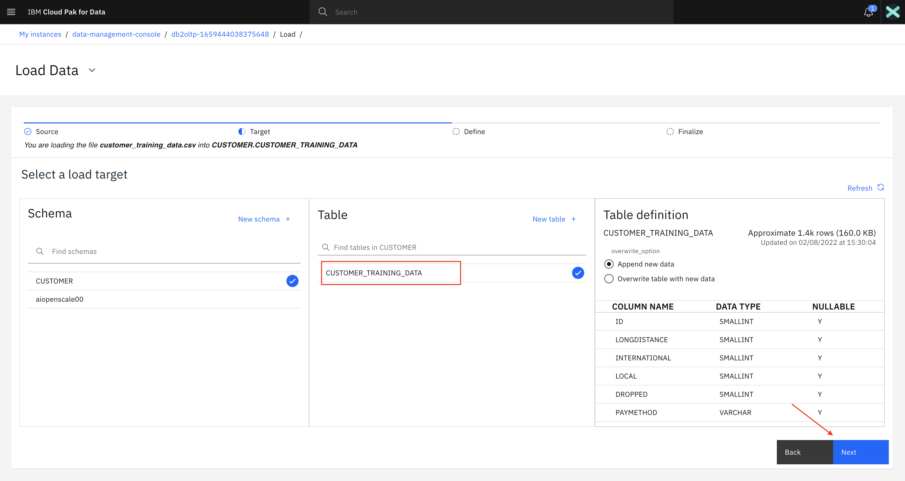
-
Click Begin Load (annotated with red arrow) to begin loading the csv file into the CUSTOMER_TRAINING_DATA table on your Db2 instance which is provisioned on the same Cloud Pak for Data cluster.
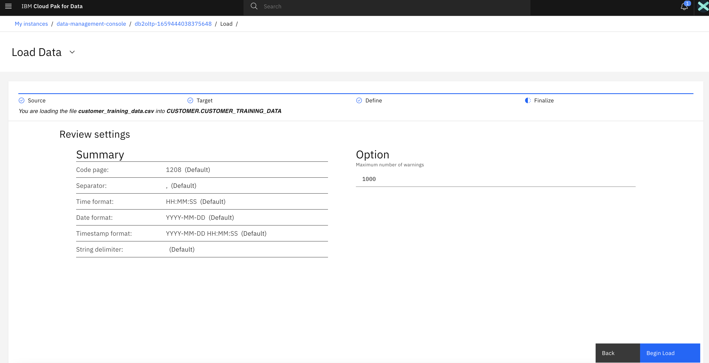
-
The load operation will run for a minute or two and you can monitor progress through the steps.
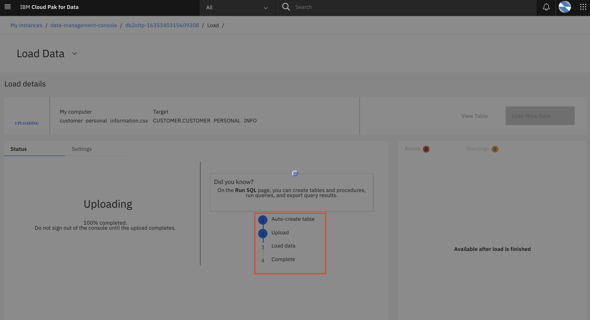
-
When data is loaded, you should see a summary message indicating the data load job succeeded.
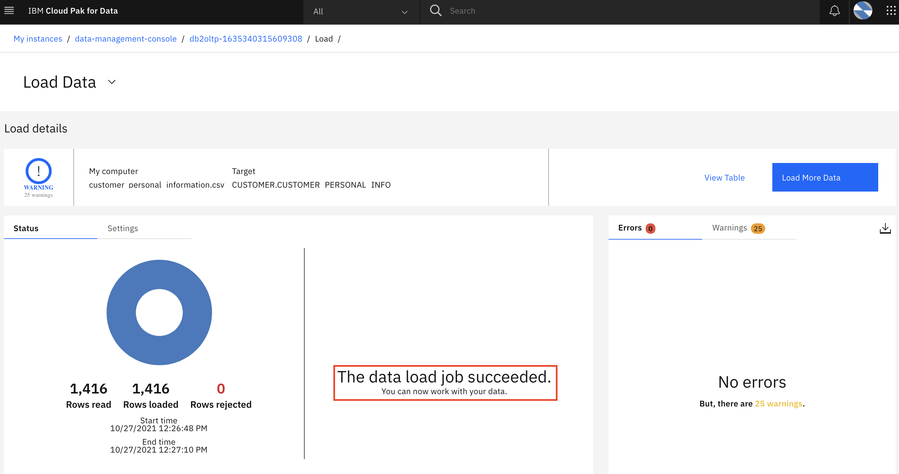
Platform connection
Create a Platform Connection named BLUDB that connects to your Db2 Database. You can use the internal Db2 service name for this:
-
To get the Db2 Deployment ID, go to the Databases menu Data > Databases.
-
Find the database you created. Click the 3-dot menu and then Details.
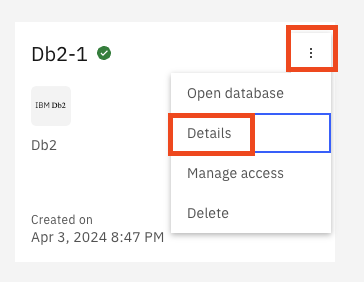
-
Copy the Deployment ID, in this example it's db2oltp-1712170077943241.
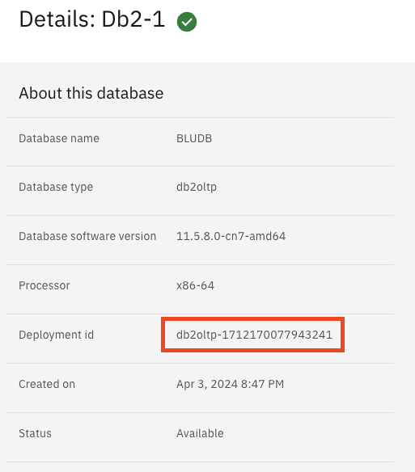
-
Go to Menu > Data > Platform Connections.
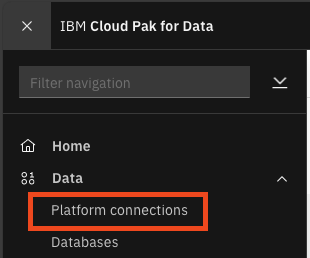
-
Click New Connection +
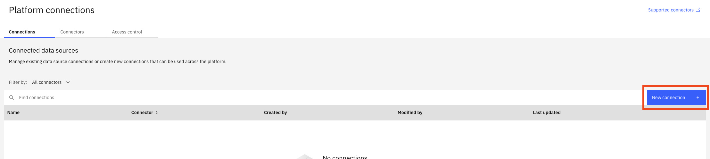
-
Select the IBM Db2 connector and click Select
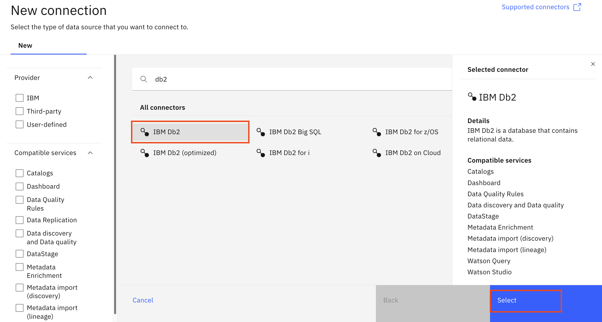
-
Insert the following values:
- Name: BLUDB
- Description: BLUDB Db2 Database
- Database: BLUDB
- Hostname: c-<DeploymentID>-db2u-engn-svc (<DeploymentID> being the Db2 ID you got before. In this example: c-db2oltp-1712170077943241-db2u-engn-svc)
- Port: 50000
- Username: admin (or your CP4D Administrator username)
- Password: admin's password
Then click Test Connection to make sure the connection is successful. If it is, click Create
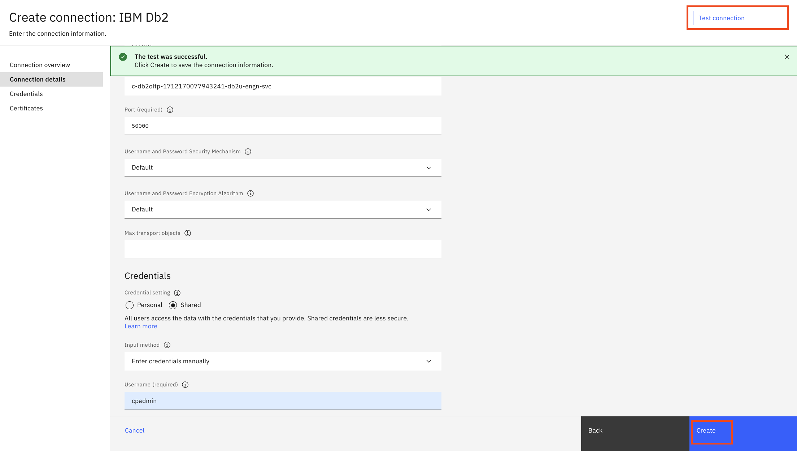
Db2 access to users
-
Go to your Db2 Database and select the option Manage access.
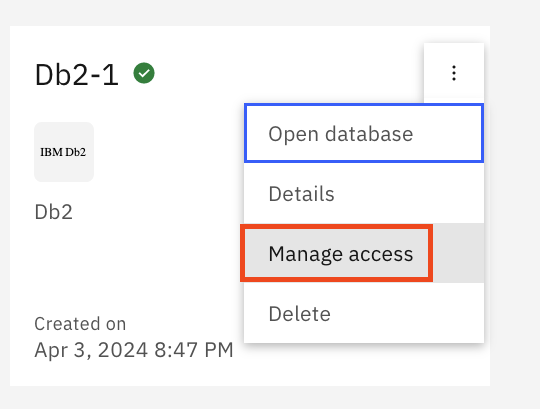
-
Add all workshop users with the role User.
-
Now open the Database and go to Menu > Run SQL.
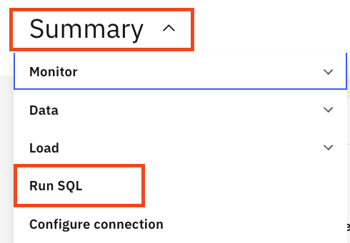
-
Run the following SQL code. This will grant the workshops users access to the CUSTOMER training data.
GRANT SELECT ON CUSTOMER.CUSTOMER_TRAINING_DATA TO USER USER0; GRANT SELECT ON CUSTOMER.CUSTOMER_TRAINING_DATA TO USER USER1; GRANT SELECT ON CUSTOMER.CUSTOMER_TRAINING_DATA TO USER USER2; GRANT SELECT ON CUSTOMER.CUSTOMER_TRAINING_DATA TO USER USER3; GRANT SELECT ON CUSTOMER.CUSTOMER_TRAINING_DATA TO USER USER4; GRANT SELECT ON CUSTOMER.CUSTOMER_TRAINING_DATA TO USER USER5; GRANT SELECT ON CUSTOMER.CUSTOMER_TRAINING_DATA TO USER USER6; GRANT SELECT ON CUSTOMER.CUSTOMER_TRAINING_DATA TO USER USER7; GRANT SELECT ON CUSTOMER.CUSTOMER_TRAINING_DATA TO USER USER8; GRANT SELECT ON CUSTOMER.CUSTOMER_TRAINING_DATA TO USER USER9; GRANT SELECT ON CUSTOMER.CUSTOMER_TRAINING_DATA TO USER USER10; GRANT SELECT ON CUSTOMER.CUSTOMER_TRAINING_DATA TO USER USER11; GRANT SELECT ON CUSTOMER.CUSTOMER_TRAINING_DATA TO USER USER12; GRANT SELECT ON CUSTOMER.CUSTOMER_TRAINING_DATA TO USER USER13; GRANT SELECT ON CUSTOMER.CUSTOMER_TRAINING_DATA TO USER USER14; GRANT SELECT ON CUSTOMER.CUSTOMER_TRAINING_DATA TO USER USER15; GRANT SELECT ON CUSTOMER.CUSTOMER_TRAINING_DATA TO USER USER16; GRANT SELECT ON CUSTOMER.CUSTOMER_TRAINING_DATA TO USER USER17; GRANT SELECT ON CUSTOMER.CUSTOMER_TRAINING_DATA TO USER USER18; GRANT SELECT ON CUSTOMER.CUSTOMER_TRAINING_DATA TO USER USER19; GRANT SELECT ON CUSTOMER.CUSTOMER_TRAINING_DATA TO USER USER20;
Deployment spaces
-
Create two new Deployment Spaces:
- Deployment space churnUATspace with Deployment Stage Testing
- Deployment space churn_prod_space with Deployment Stage Production
-
Give the role Editor to the group "All Users" on both deployment spaces.
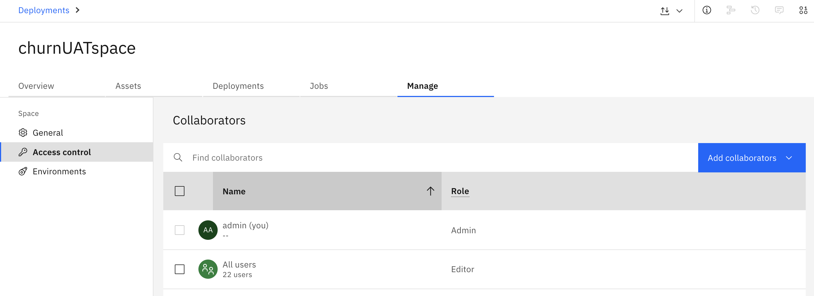 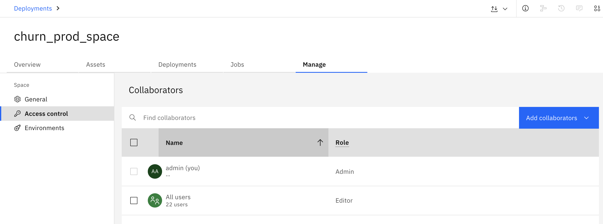
Create Factsheets inventory
-
Go to menu AI Governance > AI use cases.
-
Click the Manage settings button.
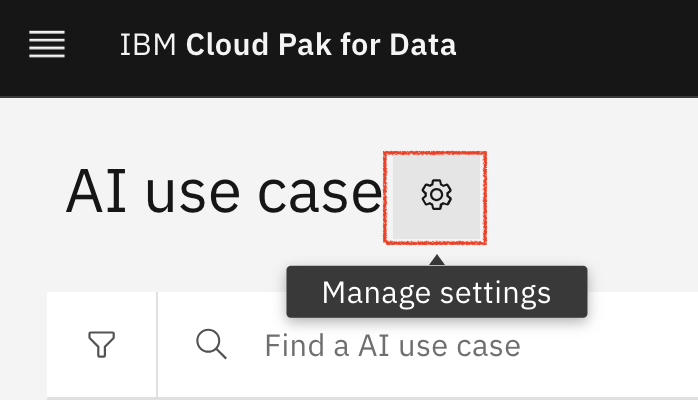
-
In the Inventories tab, click New inventory +.
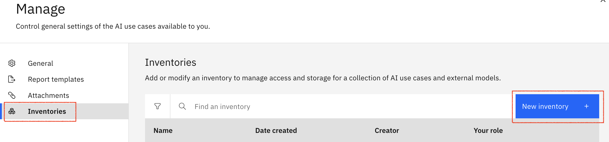
-
Insert the name AI_inventory then click Next.
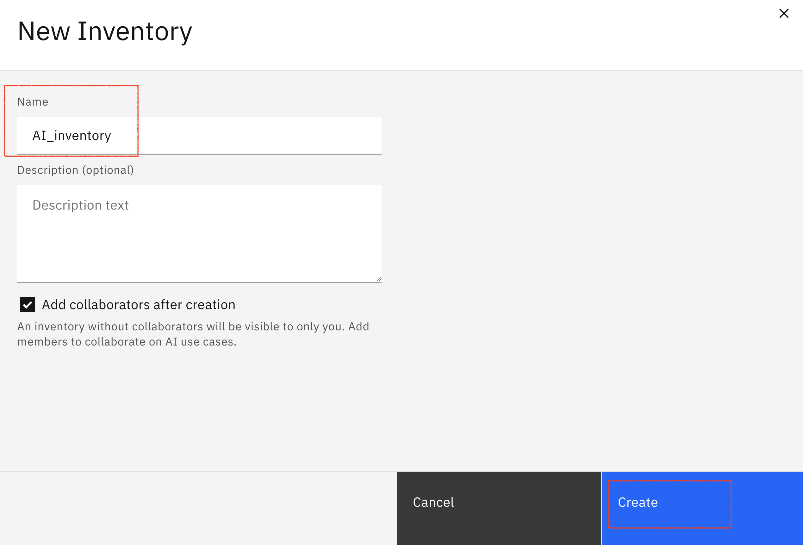
-
Click Add collaborators then Add user group.
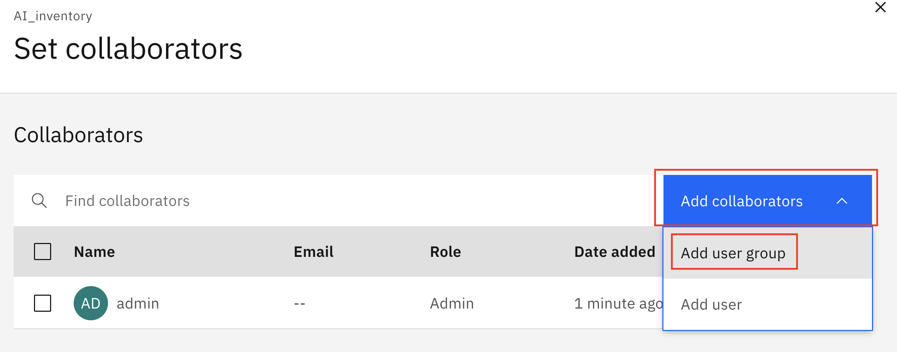
-
Select the Editor role. Then search for the group All users and add it. Finally, click Add
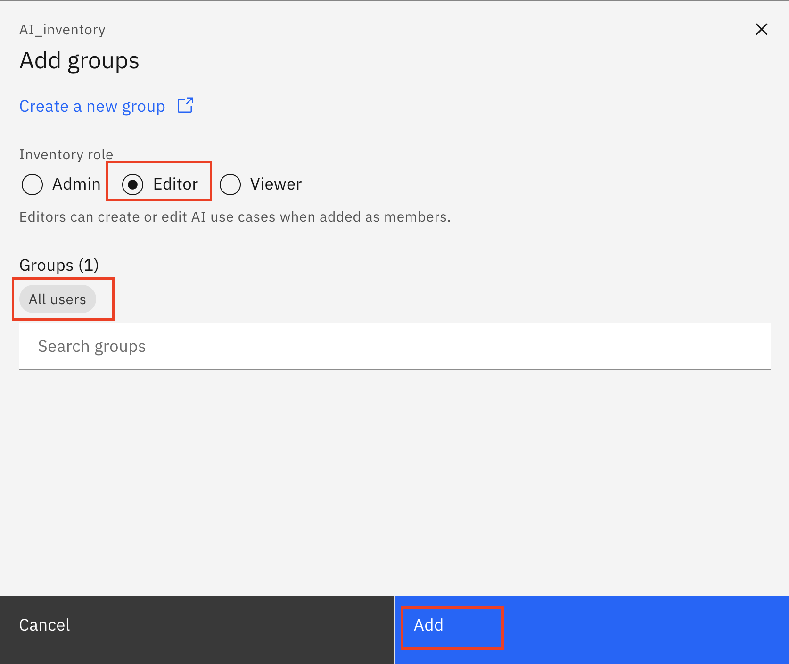
-
Click the x button to close this window.
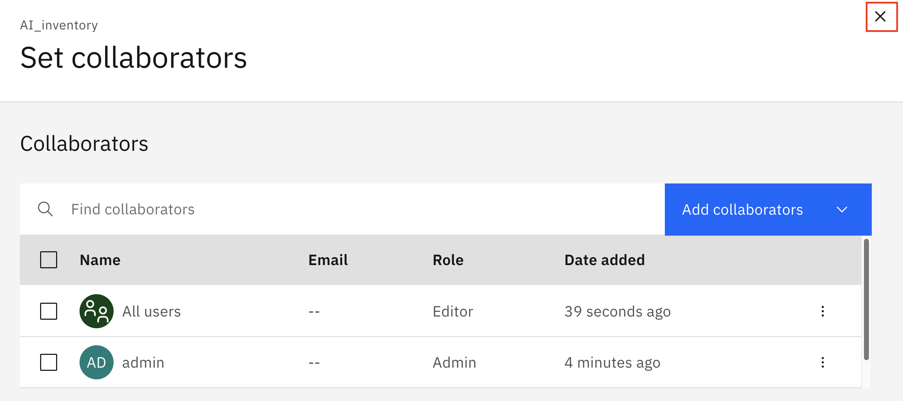
Watson OpenScale Setup
-
Go to the menu Services > Instances.
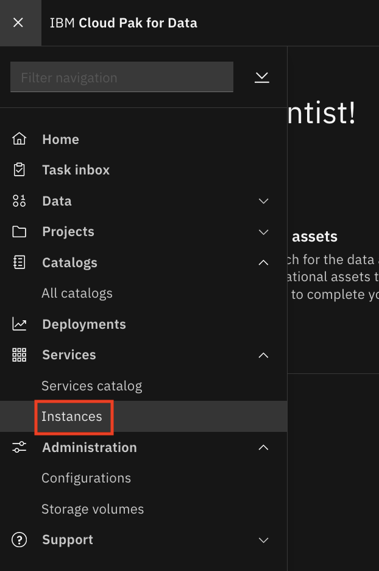
-
Find the openscale-defaultinstance, click the open drop down and select Manage access.
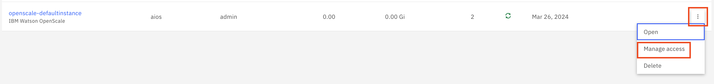
-
Click Add users + and add all workshop users with role Editor.
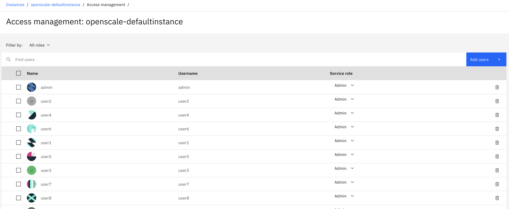
-
Go back to the list of Service Instnaces. Find the openscale-defaultinstance instance, click the open drop down and select Open.
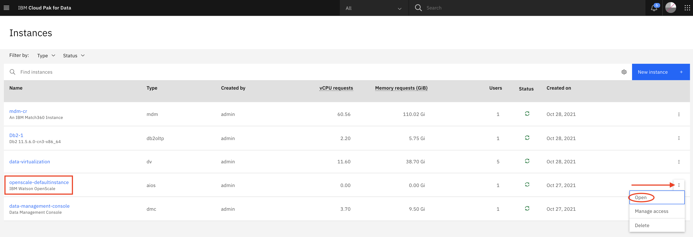
-
Click Manual setup.
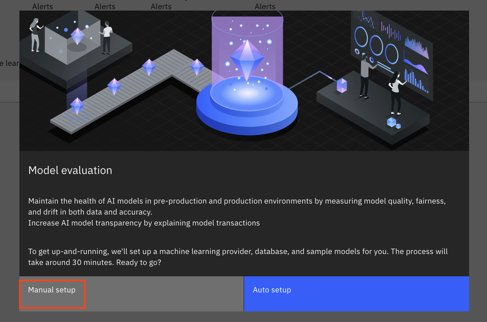
-
In the Database tab, click pencil icon to configure the database where model payload, predictions as well as calculated quality metrics will be stored.
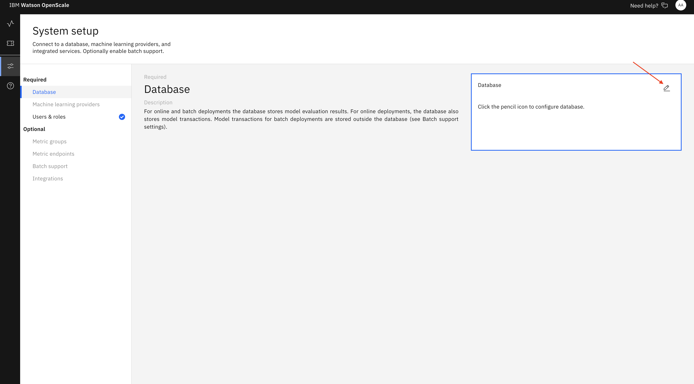
-
Choose Db2 as database type and fill teh same Db2 credentials we used for the Platform Connection. Then click Connect.
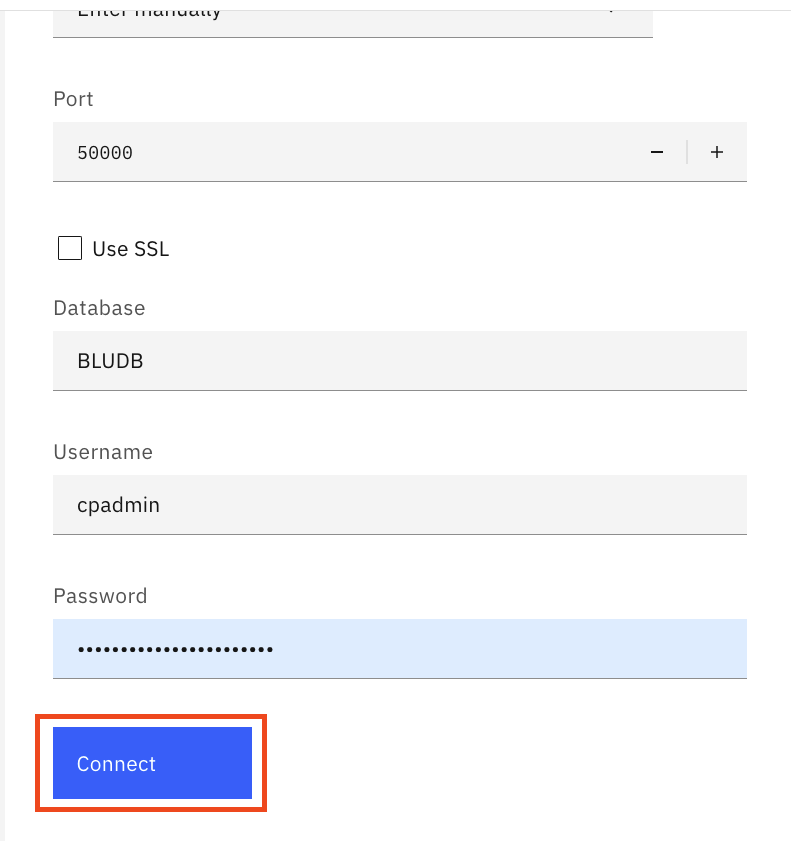
-
For Schema, select Auto-create a new schema and click Save.
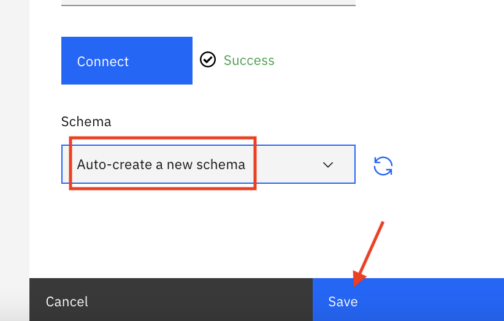
-
Go to the Machine learning providers tab and click Add machine learning provider.
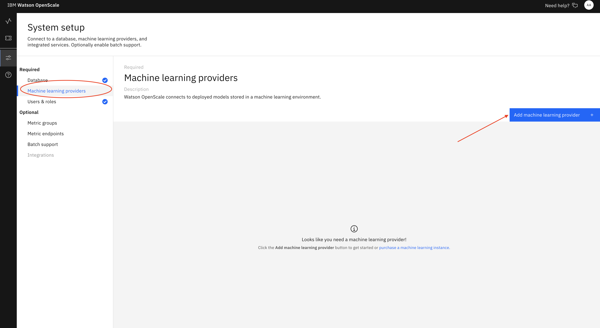
-
Provide a Name WML and Description (Watson Machine Learning provider on Cloud Pak for Data) for the machine learning provider by clicking the pencil icons. Then click the pencil icon next to Connection.
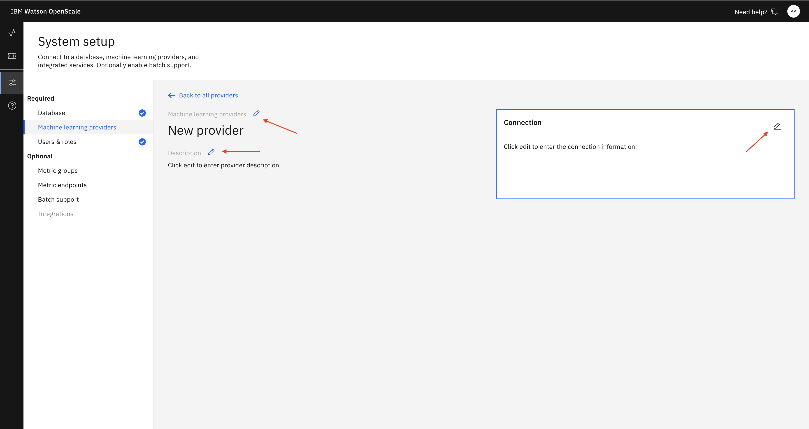
-
For the Connection configuration, you need to specify a number of parameters for OpenScale to connect to the Watson Machine Learning as the provider:
- Service provider: Select Watson Machine Learning (V2) service
- Location: Local
- Deployment space: churnUATspace
- Environment type: Pre-production
Then click Save.
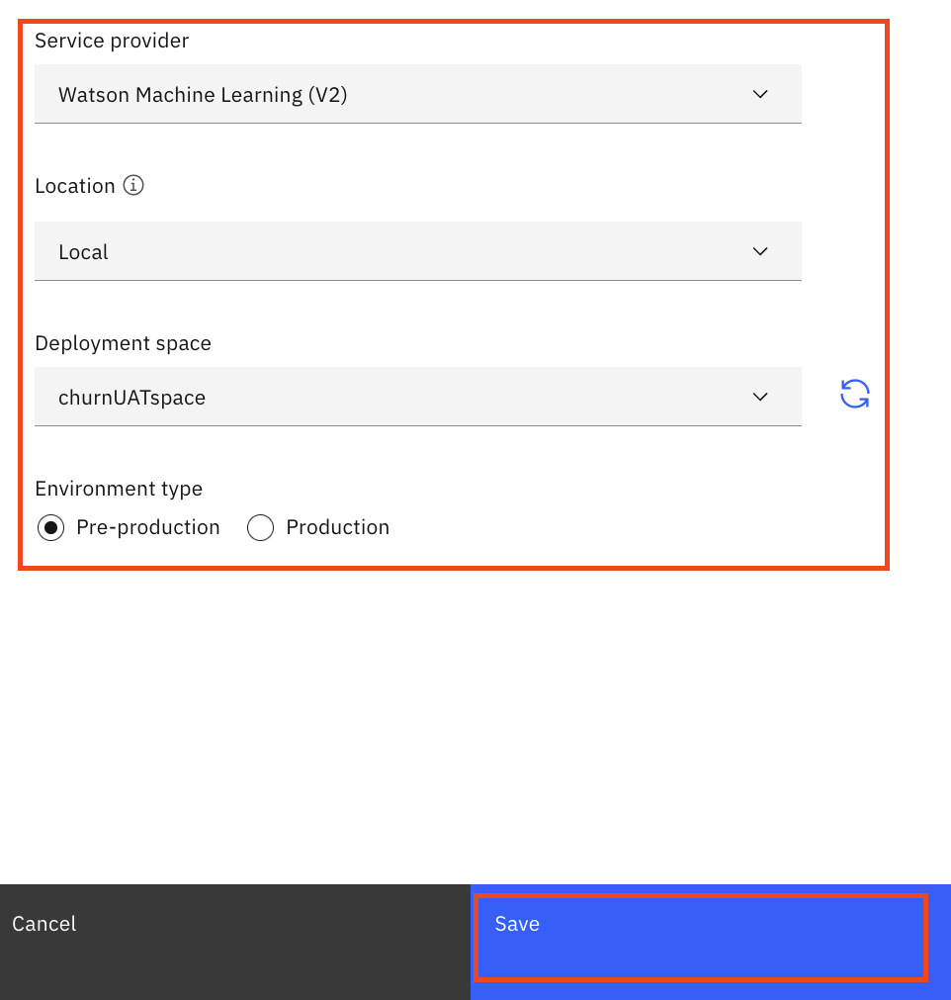